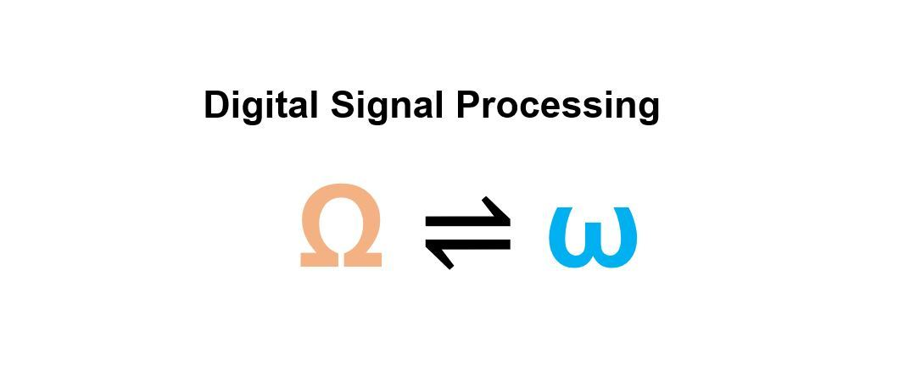
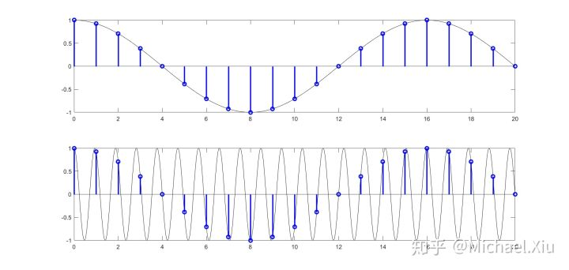
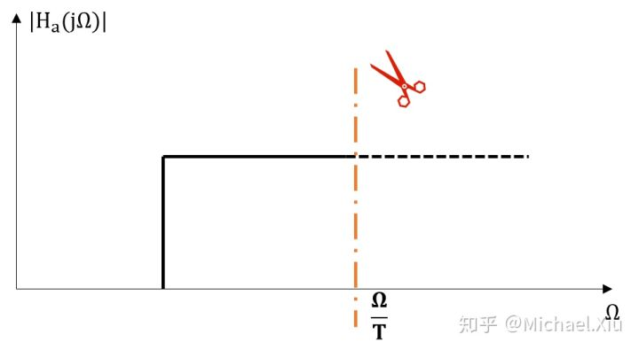

我们之前的课程接触最多的是模拟频率f，包括在模拟电路、高频电路以及传感器课程上，都是以f作为频率响应函数的横坐标。使用f的好处是其真实反映了实际系统的工作情况，从0到∞，反映了实际模拟信号振荡速度的快慢。
模拟角频率Ω=2πf，过去我们常将ω作为模拟角频率，写成cos(ωt)，这种写法实际上是不正确的，应该写成cos(Ωt)来描述模拟余弦函数。此时Ω的取值也是从0到∞，这体现出模拟（角）频率没有周期性的特点。
数字角频率ω则是完全颠覆了我们过往对于频率的认识，首先要明确的是数字信号的获得是通过对模拟信号采样的方式。它的引入可以从cos(Ωt)开始。cos(Ωt)中相位变化一个周期(2π)所需的时间为T，那么模拟角频率定义成Ω=2π/T。对于该余弦信号，采样之后变成了一个离散的数字序列，此时再谈论过了多少时间走完一个周期已经没有意义，而是过了间隔N相位刚好变化一个周期。因此数字角频率推导出为ω=2π/N，余弦信号则为cos(ωn)。既然N是由对应一段时间T采样而来，那么N=T*Fs (Fs为采样率)，自然而然，ω=Ω/Fs。简单来说，数字角频率ω是模拟角频率Ω对于采样率Fs的归一化，这是数字角频率ω的核心要义。
由于数字信号是通过抽样而来，意味着只有在短暂的采样窗口时间才能看到模拟信号的取值，而其他情况下则是看不见的。我们将任意离散信号表示为复数 [公式] ，可以看出该信号对于ω具有周期性，且周期为2π。这意味着数字角频率相较于模拟角频率而言，具有2π周期性。
e.g. Fs=1Hz，Ω分别等于π/8和π*17/8，得到如下两幅图。可以看出虽然模拟角频率Ω增加了2π，但由于采样点数和采样值都相同，所以实际的离散信号是一回事。

正是因为数字信号对于ω具有周期性，DSP才增加了额外的很多考虑：
1）DTFT、DFT是将数字信号从时间域n转为频域ω，因此我们只转为ω在[-π,π]区间内复指数信号的叠加。（也可以考虑[0,2π]，不过由于ω=0和2π是低频信号，ω=π是高频信号，考虑[-π,π]更接近模拟信号的频谱分布）
2）我们根据ω=Ω/Fs可知，从模拟角频率到数字角频率不只会落在[-π,π]，若转为数字频谱后其频带占用超过了[-π,π]，则由于具有周期性，相互之间会产生混叠。我们要把频谱ω限定在[-π,π]，则， [公式] , [公式] 。这就是Nyquist采样定理，过往我们是在模拟频域内，考虑采样信号的模拟频谱，以及如何通过频域卷积实现信号模拟频谱搬移而不发生混叠，此时我们通过对数字频域的分析也可以得到相同的结论。
3）第2点也成为我们在下采样的时候需要注意的问题，必须要保证下采样后的等效采样频率满足Nyquist采样定理，否则下采样后的信号会产生混叠。
4）在运用频域采样法设计IIR时，我们基于的AD/DA转换就是上述的ω=Ω/Fs（双线性变化法则不是）。上述说到模拟角频率Ω是没有周期性可言的，但是由于采样率的限制(离散化)，导致说数字角频率ω具有周期性。从映射角度理解，数字角频率[-π,π]在模拟角频率上的映射是一对多的。采样间隔T=1/Fs，在给定T时，数字角频率ω受到的影响来源于以2π/T为单位的模拟角频率Ω（Ω=ω/T）。为了使数字频域不发生混叠，我们需要将模拟角频率Ω框在[-π/T,π/T]，这在设计高通/带阻数字滤波器时是复杂的，如下图展示的用频域采样法设计高通FIR时所需要增加的裁剪步骤。
